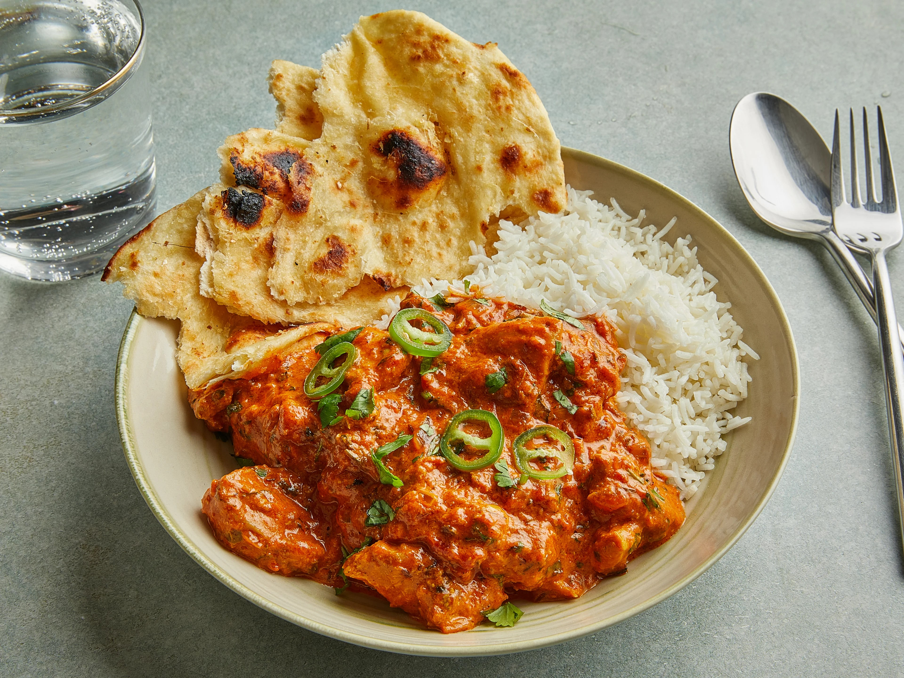

Üdvözlünk a Kelet ízei oldalán, ahol az ázsiai konyha legjavát hoztuk el neked! Merülj el a különleges ízek, színes kultúrák és autentikus receptek világában. Legyen szó pikáns curryről, friss sushi-ról, gőzölgő ramenről vagy roppanós tavaszi tekercsről, nálunk mindenki megtalálja a kedvencét.

Miért válassz minket?
Az ázsiai gasztronómia nem csupán az ízekről szól, hanem egy különleges utazásról is, amely összeköti a kultúrákat. Célunk, hogy ezt az élményt bárki számára elérhetővé tegyük – legyen szó kezdő főzőkről vagy tapasztalt ínyencekről.
Kiknek szól az oldal?
A Kelet ízei mindenkinek szól, aki:
- Szereti a különleges, ínycsiklandó fogásokat.
- Szívesen kísérletezik új receptekkel és ízekkel.
- Mélyebben megismerné Ázsia gasztronómiáját és kultúráját.
- Inspirációt keres az otthoni főzéshez.